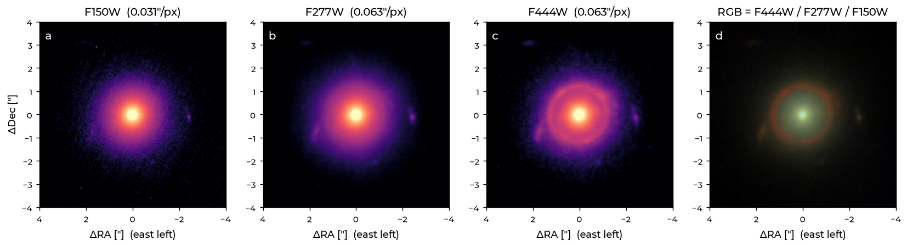
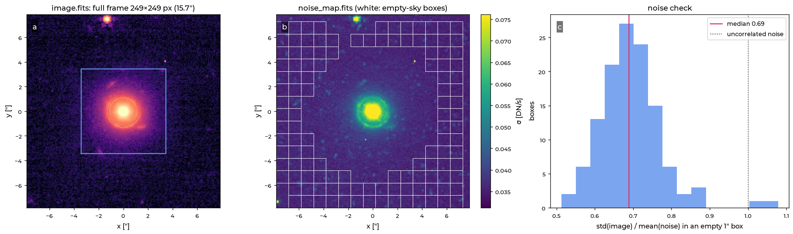
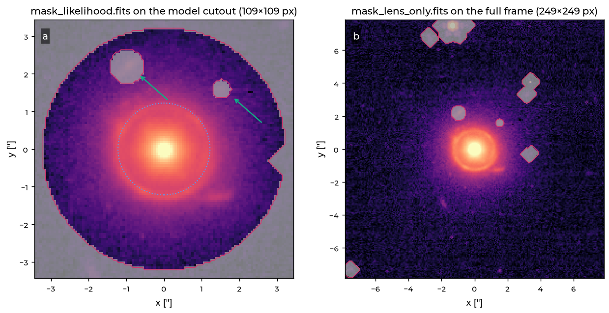
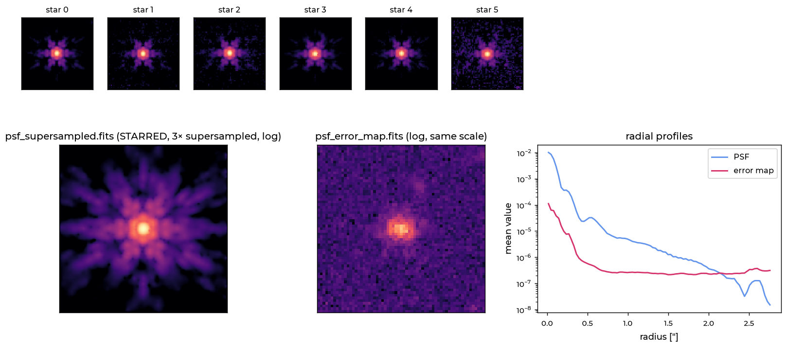
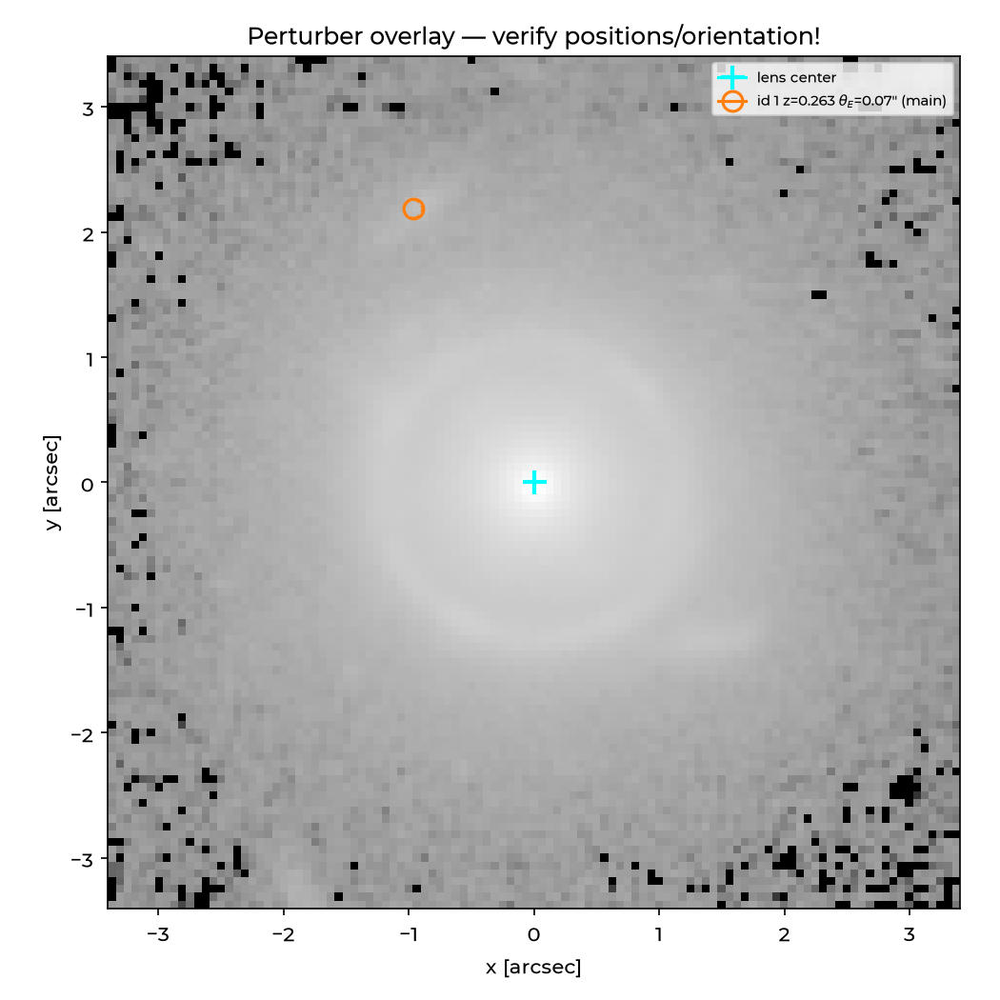
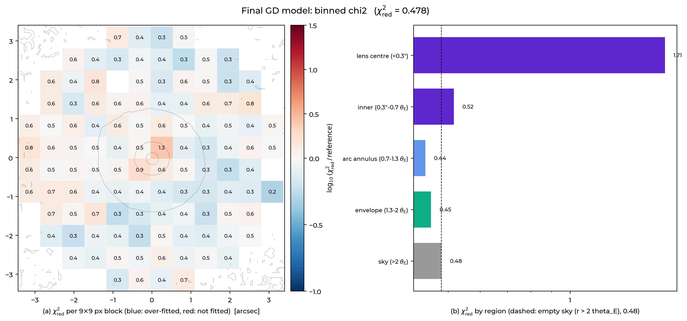
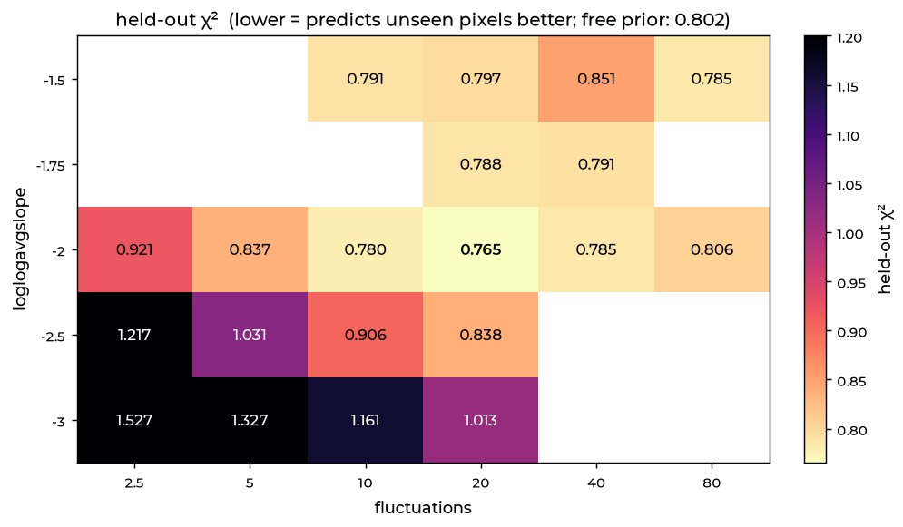
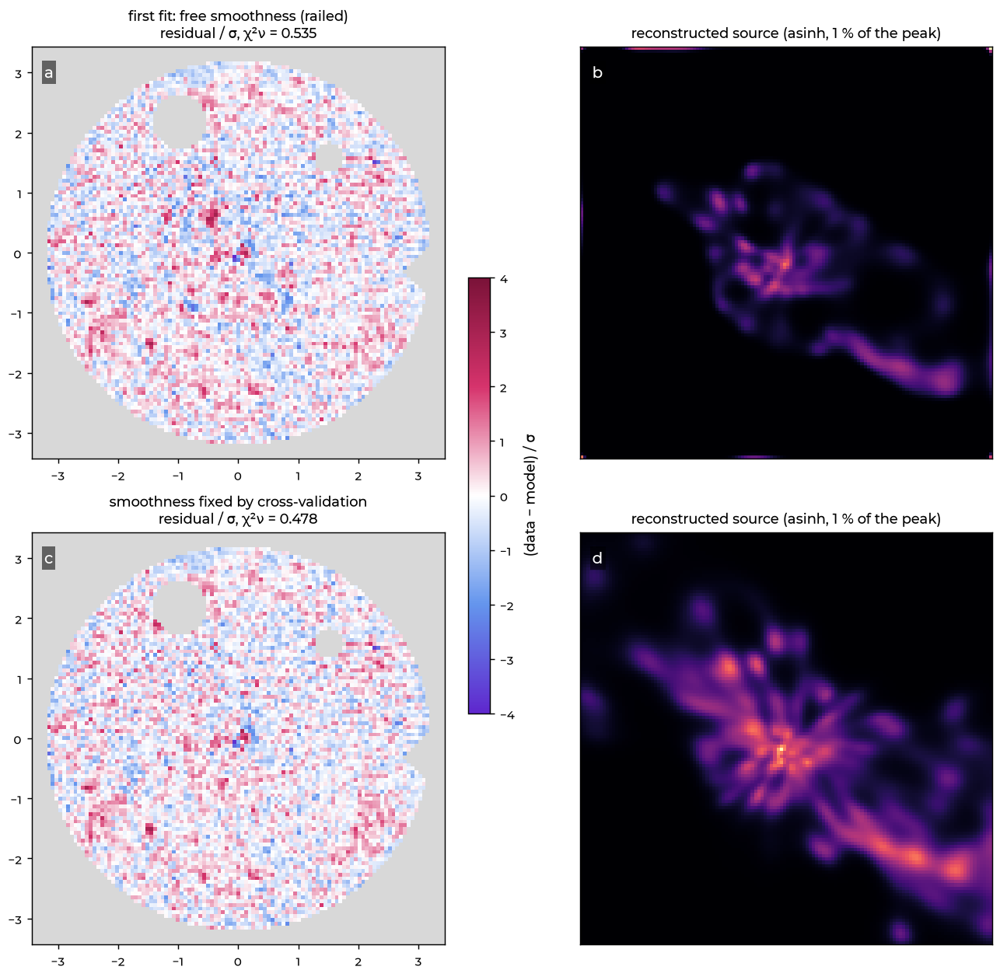

Galaxy–galaxy lens: SPT0418−47
JWST/NIRCam F444W · an almost complete Einstein ring around one elliptical galaxy · from the public archive to a posterior · no lens-modelling experience needed · the fit takes 20 min on a GPU, sampling a few hours.
Step 0What you will do
SPT0418−47 is a dusty, star-forming galaxy at redshift z = 4.225 seen through an elliptical galaxy at z = 0.263. The foreground galaxy's gravity bends the light of the background galaxy into a ring of radius 1.2″, an Einstein ring. It was found by the South Pole Telescope and imaged by JWST in the early-release programme TEMPLATES.
By the end of this tutorial you will have:
- downloaded the JWST image from the public archive and turned it into the handful of files ALPACA reads;
- built the configuration and started ALPACA;
- read every figure ALPACA makes and decided whether the model is good;
- a model whose residuals are at the noise level: the mass of the lens galaxy, its light, the PSF and a pixel-by-pixel picture of the background galaxy as it would look without the lens;
- a posterior: the uncertainty of every parameter.
- data
- JWST/NIRCam F444W i2d mosaic, programme 1355 (TEMPLATES), observation 16, 0.063″/px, public
- lens / source z
- 0.263 / 4.225
- Einstein radius
- ≈ 1.2″
- model
- power-law mass (EPL) + external shear · triple-Sérsic lens light · pixelated (correlated-field) source · PSF from stars, refined in the fit
- hardware
- a laptop works for a quick look; one GPU for the full fit (20 min); two GPUs for sampling
Galaxy–galaxy lenses without time delays do not measure cosmology, so nothing is blinded: you see every number, including the slope of the mass profile. The quasar tutorial shows the blinded case.
Step 1Lens modelling in a nutshell
If you have never modelled a lens, read this once; every later step refers back to it.
What you see. A telescope image of a lens contains three things on top of each other: the light of the foreground (lens) galaxy, the distorted light of the background (source) galaxy, and the sky. All of it is blurred by the telescope's point-spread function (PSF) and has noise.
What a lens model is. A small simulation that makes such an image from a few ingredients, so that you can compare it with the data pixel by pixel. Try the most important ingredient, the mass of the lens. In the right panel, drag the source across the red, diamond-shaped caustic and watch the images on the left appear, merge and vanish:
Try it: what makes an Einstein ring?
Put the source exactly behind the lens (centre of the caustic), set the shear to 0 and the axis ratio to 1: the images merge into a full ring of radius θE (the blue critical curve). Any ellipticity or shear breaks it into arcs; a small source inside the diamond gives four images, outside it two.
The ingredients, and where they live in ALPACA:
| ingredient | what it describes | in this tutorial | in ALPACA |
|---|---|---|---|
| mass | how much the lens galaxy bends light at every position | an elliptical power law (EPL): Einstein radius θE, slope γ (2 = "isothermal"), ellipticity, centre; plus an external shear for the pull of everything around it | mass |
| lens light | the light of the foreground galaxy itself | three Sérsic profiles | light.lens |
| source | the background galaxy as it would look without the lens | first smooth (shapelets), then a free pixel image (a "correlated field") | stages |
| PSF | how the telescope blurs a point | built from stars in the same image, refined during the fit | psf |
| sky | a constant background level | one number | light.sky_background |
How the comparison works. For every pixel, the model predicts a brightness. The difference to the data, divided by the noise in that pixel, is the normalised residual. If the model is perfect, the residuals are pure noise: values around ±1, no pattern. The mean of their squares is χ²red (≈ 1 for a perfect model with uncorrelated noise).
What ALPACA does. It changes all the ingredients until the residuals are as small as possible: the best fit or MAP (maximum a posteriori). Then it explores all models that fit about as well: the posterior, which gives each parameter its uncertainty. Everything runs in JAX, so it is differentiable and fast on a GPU.
arcsec (″): 1/3600 of a degree; the ring has a radius of 1.2″. Pixel scale: arcsec per pixel (0.063″ here). Cutout: the small square of the image that is modelled. Mask: a 0/1 image that says which pixels are used. FITS: the standard astronomy image file format. i2d: JWST's name for a combined (drizzled) mosaic.
Step 2Install ALPACA
ALPACA is a Python package. Install it into a fresh environment, so it cannot break anything else on your computer. Pick the line for your hardware:
git clone https://github.com/hkrizic/alpaca.git && cd alpaca
python3.12 -m venv .venv && source .venv/bin/activate # a new, empty Python environment
python -m pip install --upgrade pip
python -m pip install -e ".[gpu]" # NVIDIA GPU on Linux (CUDA 12)
# python -m pip install -e ".[cpu]" # no GPU: CPU only (slower, always works)
# python -m pip install -e ".[apple]" # Apple M-series Mac (GPU, float32)
alpaca-device # prints the device ALPACA will useTo make the input files yourself (steps 4–10) you also need a few astronomy packages. Skip this if you use the ready-made folder of step 3:
python -m pip install astroquery photutils stpsf starred-astro
# stpsf (the JWST PSF simulator) needs its data files once: see https://stpsf.readthedocs.io
export STPSF_PATH=/path/to/stpsf-dataMore options (conda, CUDA 13, choosing the device per run) are in the installation guide.
Step 3How a run is organised
Every ALPACA model lives in one folder. You make three things; ALPACA makes the fourth:
SPT0418-47_tutorial/
├── data/ the input files: image, noise map, masks, PSF (steps 6–10)
├── config.json every modelling choice, in one file (step 11)
├── run_alpaca.py which files to read and where the lens is; starts ALPACA (step 12)
├── job_slurm.sh the same on a computing cluster (step 13)
├── prep/ the scripts that made data/
└── run/ written by ALPACA: figures, fits, the posterior (steps 13–17)and two commands:
python run_alpaca.py config.json --fit-only # the best fit
python run_alpaca.py config.json # the best fit (reloaded from run/) + the posteriorRunning the same configuration into a finished folder resumes it: finished stages are reloaded, not
recomputed. If you change the configuration, ALPACA recomputes what depends on it and keeps the old results as
*.stale-<time> copies. Use one output folder per model variant.
Shortcut. To see ALPACA run before learning how the inputs are made, download this folder (everything
except run/) and start it. Then jump to step 13, and come back to steps 4–12
when you want to model your own lens: they show how every file in it was made.
Download SPT0418-47_tutorial.zip
unzip SPT0418-47_tutorial.zip && cd SPT0418-47_tutorial
python run_alpaca.py config.json --fit-only # 20 min on a GPU, longer on a laptopStep 4Find the data
All JWST data become public after a short proprietary period and are stored in the
MAST archive. For imaging you want the level-3 mosaic, called
*_i2d.fits: all exposures of one observation combined, distortion-corrected and on a regular grid.
Search MAST in the browser (by the lens name or its coordinates, filter on NIRCam, level 3), or in Python:
from astroquery.mast import Observations
obs = Observations.query_criteria(objectname="SPT0418-47", radius="10 arcsec", obs_collection="JWST",
instrument_name="NIRCAM/IMAGE", calib_level=3, dataRights="PUBLIC")
print(obs["obs_id", "filters", "t_exptime"]) # one mosaic per filter
# jw01355-o016_t001_nircam_clear-f444w F444W 429.5 ...An i2d file has several extensions. The two you need are SCI (the image, in MJy/sr) and
ERR (the 1σ uncertainty of every pixel, same units). Each filter is a different wavelength:
F150W is 1.5 μm, F444W is 4.4 μm. NIRCam's short-wavelength filters have 0.031″ pixels, the long-wavelength
ones 0.063″. You don't need to download anything by hand: the preparation script of step 6 finds and downloads
the mosaic (136 MB for F444W).
Step 5Look at the data
Always look before you decide anything. TEMPLATES observed six filters. The lens galaxy is bright in all of them; the ring is not:

Choose the band in which the arcs stand out most against the lens. Here that is F444W, even though its pixels are twice as big: in F150W the ring is invisible under the lens light. A rule of thumb: pick the band where you can see the arcs by eye without subtracting anything.
Also note what else is in the field: a small galaxy 2.4″ to the upper left and a compact one to the upper right. They are not part of the lens and will be masked.
Step 6Make the input files
ALPACA does not read the mosaic itself. It reads a small set of files, all centred on the lens:
| file | what it is | size here |
|---|---|---|
image.fits | the full frame: a square cut from the mosaic, centred on the lens, sky subtracted, in DN/s | 249 × 249 px (15.7″) |
noise_map.fits | 1σ uncertainty of every pixel of image.fits, same units | 249 × 249 |
mask_likelihood.fits | which pixels of the model cutout enter the fit (1 = use) | 109 × 109 (6.9″) |
mask_lens_only.fits | which pixels of the full frame belong to the lens and sky (for the lens-light refit) | 249 × 249 |
psf_supersampled.fits | the PSF, sampled 3× finer than the data pixels, sum = 1 | 189 × 189 |
psf_starred_seed.npz | the PSF's parameters (made by STARRED); ALPACA builds its live PSF from these | |
psf_error_map.fits | how uncertain each PSF pixel is (how far the PSF may change in the fit) | 189 × 189 |
Why two sizes? ALPACA models only the central cutout (here 109 pixels, 6.9″): that is where the lens and ring are, and it keeps the fit fast. The bigger frame is used once, to fit the faint outer light of the lens galaxy and the sky, which the cutout is too small to pin down. The rule for the cutout: it must contain every arc with some margin, roughly 2 × (2.4 θE + 1″) on a side, and have an odd number of pixels, so that the lens sits on a pixel.
The bundle's prep/prepare_gg.py makes all of these except the PSF files in one go (it reproduces
this tutorial's inputs bit for bit):
cd SPT0418-47_tutorial/prep
python prepare_gg.py --name SPT0418-47 --ra 64.66533 --dec -47.86465 --filter F444W \
--theta-e 1.3 --keep-r 2.6 --aperture 3.2 --out ../data --work ..| option | meaning | how to choose it for your lens |
|---|---|---|
--ra --dec | approximate lens position [degrees] | from the discovery paper or by clicking on the lens in the image; the script refines it to the light centroid |
--filter | the band of step 5 | |
--theta-e | approximate Einstein radius [″] | the literature value, or the ring radius measured on the image (here 1.3″) |
--keep-r | everything that touches a circle of this radius is "lens + arcs" and is kept; everything else is masked | ≈ 2 θE: must include the outermost arc |
--aperture | radius of the region used in the fit | ≈ 2.5 θE; must contain all arcs, not much empty sky |
What the script does, step by step, so you can redo it with your own tools:
- Finds the lens centre: a 2-D Gaussian fit to the light in a 15-pixel box around the position you
gave. The frame is centred on the nearest pixel; the remaining sub-pixel offset is written into the header
(
LENSDX,LENSDY, here +0.013″, −0.028″) and later into the run script. - Cuts the frame (249 × 249 px) from
SCIandERR. - Converts units: both are divided by the header keyword
PHOTMJSR(MJy/sr → DN/s). Any unit works, as long as the image and the noise map use the same one. - Bad pixels (NaN, or noise ≤ 0) get image value 0 and a huge noise (10⁶ × the maximum), so they carry no weight. Never leave NaNs in the inputs.
- Finds all sources with a segmentation map (photutils), keeps those touching
--keep-rand masks the rest (grown by 6 pixels). - Subtracts the sky: the sigma-clipped median of empty pixels outside the lens (here 0.727 DN/s).
- Writes the two masks (step 8) and a model PSF from STPSF, the JWST PSF simulator, which is only used to select stars and as a comparison.
- Cuts PSF-star stamps around Gaia stars in the same mosaic and keeps the clean ones (step 9).
Prefer clicking to scripting? The configurator loads a FITS file in the browser, crops it around the lens, lets you draw mask circles and exports image, noise map and masks as FITS.
Step 7Check the noise
The noise map decides how much every pixel counts. If it is wrong by a factor, every χ² is wrong by that factor squared, and a bad model can look excellent. Check it against the real scatter of the image in empty sky. Try it in the viewer: choose data, untick grey out masked pixels, and drag a box over an empty corner. The box reports std(image)/mean(noise). (The model and residual tabs show the final model of step 15.)
The same in Python:
import numpy as np
from astropy.io import fits
img, err = fits.getdata("data/image.fits"), fits.getdata("data/noise_map.fits")
box = (slice(10, 26), slice(10, 26)) # a 1" box in an empty corner (look at the image first!)
print(np.std(img[box]) / np.mean(err[box])) # ~0.7 for drizzled JWST mosaics
image.fits, the full frame, with the model cutout (blue square) and the Einstein
radius (dotted). (b) noise_map.fits: brighter where the lens adds photon noise; the white
squares are empty-sky boxes. (c) In all 121 boxes, std(image)/mean(noise) has a median of 0.69.A ratio of about 0.7 is expected for drizzled mosaics: combining dithered exposures correlates neighbouring pixels, which lowers the pixel-to-pixel scatter while the ERR extension keeps the per-pixel uncertainty. The consequence: a perfect model of this image has χ²red ≈ 0.5, not 1. Keep that number in mind for step 15.
Quiz: your noise check gives 2.1. What now?
Stop and fix the inputs before modelling. The noise map is too small by a factor of about 2 (often a unit mismatch: image converted to DN/s, noise left in MJy/sr, or the noise of a single exposure applied to a stack). Every χ² would come out 4–5× too large, and the fit would chase noise.
Step 8Masks
ALPACA uses two masks (1 = use the pixel, 0 = ignore it):
- the likelihood mask, on the model cutout: the pixels the fit tries to reproduce. A circle around lens
and ring (the
--aperture), with every unrelated object cut out; - the lens-only mask, on the full frame: the lens galaxy and the sky, with every other object cut out. It is used for the lens-light refit (step 14). The arcs are not masked here; ALPACA subtracts its own source model first.

The automatic segmentation can miss small objects that touch the lens light; here it missed both galaxies
inside the aperture. They show up clearly in the residuals of a first fit, and
prep/mask_neighbours.py cuts them out (two circles, 0.45″ and 0.25″). Masks are a starting point;
the residuals tell you what to fix.
Keep the lens, all arcs and counter-images. Remove everything you do not model: other galaxies, stars, diffraction spikes, detector artefacts. Do not mask the lens centre. Look at both masks overlaid on the image before every run: a χ² will not tell you that a mask is wrong.
Step 9The PSF from stars
Every point of light is smeared by the telescope into the PSF: a bright core with JWST's six-pointed diffraction pattern. The model image is convolved with the PSF before it is compared with the data, so a wrong PSF leaves residuals around every sharp feature. The best PSF is measured on stars in the same image, because they are true point sources seen through exactly the same optics and processing.
- Find stars.
prepare_gg.pytakes every Gaia star within 3′ of the lens, cuts a stamp (63 × 63 px) and rejects stars that are saturated, extended (galaxies), too faint (peak S/N < 50), off the mosaic, or have a neighbour. Six stars survive here (data/stars/). - Fit them with STARRED. STARRED fits all stars at
once with one PSF: an elliptical Moffat profile plus a pixel grid for everything the Moffat misses, 3×
finer than the data pixels. Use the STARRED GUI, or the bundled script:
It writes the three PSF files of step 6 andpython prep/reconstruct_psf_starred.py data # a few minutes on a GPU, ~10 min on a CPUdata/psf_starred/with its fit residuals. Here the stars are fitted to χ²red = 1.64.

What the three files do in the fit. ALPACA's default psf.mode: "joint" builds its PSF from
the STARRED parameters (psf_starred_seed.npz) and lets it change during the fit, within the error
map. The kernel file psf_supersampled.fits is the same PSF as an image, used for quick models and
figures. Seed and kernel must describe the same PSF; STARRED's own export guarantees that.
Use stars on the same detector module as the lens, covered by all exposures (stars in the gaps between dithers have a PSF built from fewer frames), bright but not saturated, and isolated. A few good stars beat many mixed ones: if STARRED cannot fit the stars well (χ²red far above 2), look at its residuals and drop the stars that stand out.
Step 10Nearby galaxies (perturbers)
Masking a neighbouring galaxy removes its light, but its mass still bends the light of the source. ALPACA can give such galaxies their own mass. It calls them perturbers and reads them from a small catalogue file. Here is how to decide whether you need one, and how to make and use the file from zero.
10a · Do you need one?
The tidal effect of a galaxy beyond the external shear is measured by its flexion shift, Δ3x = θE,main² θE,pert² / d³ (d: its distance from the lens). Include galaxies with Δ3x > 10⁻⁴″ and every galaxy inside or touching the ring. You need its Einstein radius for that; for a quick estimate scale from the lens by the square root of the flux ratio (θE ∝ √L, the Faber–Jackson relation). For the two small galaxies masked in step 8:
| galaxy | distance d | flux / lens flux (F444W) | θE estimate | Δ3x |
|---|---|---|---|---|
| north-east | 2.39″ | 0.0034 | 0.071″ | 5.5 × 10⁻⁴″ |
| north-west | 2.19″ | 0.0003 | 0.019″ | 5.3 × 10⁻⁵″ |
The north-west galaxy is far below the threshold. The north-east one is above it, if it is at the lens redshift (its redshift is unknown). So we try it.
10b · Write the catalogue
The catalogue is a JSON file with a target block (the lens) and a list of perturbers. The
simplest way to give positions is in pixels of your own image.fits; then no sky coordinates are
needed. prep/make_neighbour_catalogue.py measures the galaxy's flux-weighted centroid and flux on
the image minus the lens-light model and writes:
{
"target": {
"z_lens": 0.263, "z_source": 4.225, // redshifts of lens and source
"pix_scale_arcsec": 0.063008, // pixel scale of image.fits
"npix": 249, // size of image.fits: pixel_xy is counted in this frame
"theta_E_main_arcsec": 1.22,
"ra_deg": null, "dec_deg": null // no sky coordinates: positions are pixels of image.fits
},
"perturbers": [
{
"id": 1, // the parameters will be called pert1_...
"ra_deg": null, "dec_deg": null,
"pixel_xy": [108.71, 158.66], // x = column, y = row in image.fits, counted from 0
"redshift": {"z": 0.263, "source": "assumed"}, // required; unknown here, so the lens redshift
"profile": {"mass_model": "SIS", "theta_E_arcsec": 0.0711}, // the centre of the theta_E prior
"theta_E_prior_sigma": 0.0284, // +-40 %: a Gaussian prior (without it: flat from 0)
"theta_E_max_factor": 3.0, // upper bound: 3 x 0.0711"
"fix_positions": true, // the light centroid is the position
"notes": "small galaxy 2.39\" NE; light masked"
}
]
}(The // comments are for this page only; JSON files cannot contain comments.) ALPACA converts a
pixel position to its own coordinates as (pixel − (npix − 1)/2) × pix_scale, i.e. arcsec from the frame
centre: here (−0.97″, +2.18″). A catalogue can instead give RA/Dec for the lens and each galaxy; the
quasar tutorial explains that form, the redshift planes and every
field.
10c · Tell ALPACA
One line in config.json, in the mass section:
"mass": { ..., "perturbers": { "path": "data/perturbers_neighbour.json", "mode": "auto", ... } }Its other keys (redshift tolerance for the lens plane, default priors, which entries to use) are explained in
the quasar tutorial. When ALPACA starts, it prints what it
understood; check that the position and the plane are right, and look at
run/01_input/plots/perturbers_overlay.png:
Perturber catalog: data/perturbers_neighbour.json (1 entries, mode=auto)
[perturbers] 1 perturber(s) without RA/Dec — using model-frame pixel_xy directly.
[perturbers] 1 perturber(s) from data/perturbers_neighbour.json:
id=1 z=0.2630 (main ) SIS theta_E=0.071" at (-0.963", +2.184") small galaxy 2.39" NE; ...
Perturber overlay saved to run/01_input/plots/perturbers_overlay.png
01_input/plots/perturbers_overlay.png: the circle (the perturber) must sit on
the galaxy, the cross on the lens. The galaxy is faint at this stretch, at (−0.96″, +2.18″).10d · Does it matter?
Fit once with and once without the perturber (two output folders), then compare:
The recipe in general: add a component, refit, and keep it if the data ask for it (a clearly better fit, a mass that is not pushed to zero). If they don't, but your result moves by more than its statistical uncertainty (step 17), report the difference as a systematic uncertainty. A redshift and velocity dispersion of the galaxy would settle it.
Step 11Build the configuration
config.json holds every modelling choice. It is long (about 300 lines), but you change only a
few of them. Two ways to get one:
- Copy the
config.jsonthat ships with ALPACA (it knows every option of your installed version) and edit the keys below, or - open the configurator, pick the galaxy–galaxy preset, move the sliders, and export the file.
Explore this tutorial's final configuration. Keys marked ■ differ from the shipped file; click any key to see what it does and its default:
The file is organised in sections. Here they are one by one, with what to set for a galaxy–galaxy lens.
run · where the results go
"run": { "output_dir": "run/", "random_seed": 42, "multistart": true, "sampling": true }One output folder per model variant. sampling: true runs the posterior after the fit (the
command-line flag --fit-only overrides it).
data · pixels and the fitted region
"data": { "pix_scale": 0.063008, // header keyword PIXSCALE
"cutout_size": 109, // odd; contains every arc with a margin
"likelihood_mask_path": "data/mask_likelihood.fits" }mass · the lens
"mass": {
"main": { "profile": "EPL+Shear", // power law + external shear
"theta_E_prior": { "center": 1.3, "sigma": 10 }, // REQUIRED for galaxy-galaxy lenses
"multipoles": { "orders": [] } }, // angular structure: none
"perturbers": { "path": null } // no nearby galaxy gets its own mass
}Without quasar images ALPACA has no other way to know the size of the system: theta_E_prior.center
sets the search range of θE and the radius of the arc region. sigma: 10 keeps the prior
itself broad.
light · lens light, sky, point sources
"light": {
"lens": { "initial": "double-sersic", // stage 1
"couple_sersic_centers": true, // one centre for all components
"refit": { "enabled": true, "profile": "triple-sersic",
"mask_path": "data/mask_lens_only.fits", "uncouple_centers": false } },
"sky_background": true,
"point_sources": { "enabled": false } // THE galaxy-galaxy switch
}point_sources.enabled: false switches off everything that belongs to quasars: image detection,
time delays, image positions and the point-source PSF terms. Coupled centres keep the lens-light components on
one centre, so no component can wander off onto an arc.
stages · how the best fit is searched
"stages": {
"gd": { "source": { "type": "shapelets", "n_max": 16 }, // stage 1: smooth source
"optimizer": { "halving": { "keep": [64, 32, 16, 8, 4] }, // 64 random starts, halved
"refine": { "top": 4 } } }, // the best 4 refined
"cf_joint": { "source": { "type": "corr_field", "num_pixels": 128, // stage 3: pixelated source
"loglogavgslope": [-2.0, 0.001], "fluctuations": [20.0, 0.02],
"mean_intensity": 0.004, // step 16
"arc_mask": { "mode": "auto", "outer_radius": 2.8 } },
"adam_steps": 80000,
"convergence": { "enabled": true, "window": 4000, "abs_tol": 2.0 } }
}Galaxy–galaxy fits have fewer constraints than quasars, so more random starts are kept for longer than in the
shipped file. The pixelated source is constrained by the pixels out to 2.8″ (the ring and the companion's arc).
convergence stops stage 3 when the loss has improved by less than 2 over the last 4000 steps,
instead of after a fixed number of steps. The smoothness values are explained in step 16: leave the shipped
values for your first run.
psf · the PSF
"psf": { "mode": "joint", // STARRED seed, refined in the fit
"input": { "oversample": 3, "error_map_path": "data/psf_error_map.fits" },
"joint": { "seed_path": "data/psf_starred_seed.npz", "free": ["moffat", "background"] } }likelihood · what is compared with the data
"likelihood": { "use_time_delays": false, "time_delays": null, // no quasar images, no delays
"use_rayshoot_consistency": false,
"astrometry_mode": "image_plane", // the default; inactive without quasars
"noise_model": { "use_psf_error_map": false } } // a quasar-only noise termsampling, blinding, plotting
"sampling": { "sampler": "nifty",
"nifty": { "mode": "nuts_only",
"nuts": { "n_warmup": 500, "n_samples": 500, "n_chains": 2,
"target_accept": 0.8, "max_tree_depth": 12 } } },
"blinding": { "enabled": false } // no cosmology to hidePaths in the configuration (data/...) are relative to the folder you start ALPACA from. Check that
the file loads without errors before you start a long run:
python -c "from alpaca.utils import load_config_from_json as l; c = l('config.json'); print(c.psf.mode, c.data.cutout_size)"
# joint 109Every option is explained, with its default, in the configuration reference.
Quiz: you forget point_sources.enabled: false. What happens?
ALPACA treats the lens as a quasar lens and looks for point images. It will either stop with an error (no image positions) or place point sources on the brightest knots of the ring. The first log lines tell you: a galaxy–galaxy run must print Galaxy-galaxy mode (point sources off).
Step 12The run script
run_alpaca.py is a copy of the script in the ALPACA repository. Its first lines say which files to
read and where the lens is; everything scientific stays in config.json. For this lens:
IMAGE_PATH = "./data/image.fits" # the full frame
PSF_PATH = "./data/psf_supersampled.fits" # the STARRED kernel, 3x supersampled
NOISE_MAP_PATH = "./data/noise_map.fits"
IMAGE_POSITIONS = None # galaxy-galaxy lens: no quasar images to label
REFERENCE_IMAGE = None
LENS_POSITION = (0.0126, -0.0276) # arcsec: the sub-pixel offset of the lens from the frame centre
# (header keywords LENSDX, LENSDY of image.fits)
TIME_DELAYS = NoneCoordinates in ALPACA are in arcsec, relative to the centre of the frame, with x to the right (increasing
column) and y up (increasing row), as when you show the image with origin="lower". The
configurator writes these lines for you, too.
Step 13Run the fit
Always start with the best fit alone (--fit-only), look at it, and sample only when it is good:
python run_alpaca.py config.json --fit-only # NVIDIA GPU or CPU
python run_alpaca.py config.json --fit-only --backend mps --precision float32 # Apple GPU (a quick look)
python run_alpaca.py config.json --fit-only --output runs/test_seed7/ # another output folderOn a computing cluster, submit the same command as a job. The bundle's job_slurm.sh is a
template (set your partition and account):
sbatch --gres=gpu:1 job_slurm.sh --fit-only # best fit: one GPU, ~20 min
sbatch job_slurm.sh # best fit (resumed) + sampling: two GPUs, a few hoursWhat you see in the terminal, in order (abridged from the real log):
Galaxy-galaxy mode (point sources off): extended-source-only fit.
ALPACA: gpu / float64 / cuda:0, cuda:1
[cutout] modelling on central 109x109; lens-light refit uses the full 249x249 frame.
Loaded likelihood mask from: data/mask_likelihood.fits
Active pixels: 7838/11881 (66.0%)
[setup_lens] Auto arc mask inner radius: 0.6 * 0.8 theta_E_prior = 0.6240 arcsec
Model has 35908 parameters
PHASE 1: MAP ESTIMATION (stages: gd -> cf_warmstart -> lens_light_refit -> cf_joint)
Phase 1: 64 initial starts (parallel) <- stage 1
[Phase 1] 51 mean-init starts + 13 full-prior starts
[Phase 1][anneal:discrete] level 1/5: noise x16, 64 start(s), adam=80, lbfgs=80
...
[Iteration 1] Best χ²_red: 0.9438
[lens-light refit] triple-sersic (3 profiles): chi2 1.18e+06 -> 2.836e+04 over 3000 steps <- stage 2
[staged:cf_joint] phase A — CF source warmstart (source-only adam, 8000 steps, rest pinned). <- stage 3
[staged:cf_joint] stage 3 stopped: converged after 21200/80000 steps
[staged] complete: shapelets: chi2=0.9437528273377607 lens_light_refit: chi2=None cf_joint: chi2=0.4807087439003206
Multi-start completed in 1106.37s
chi2_red by region: lens centre (<0.3") 1.71 | inner (0.3"-0.7 theta_E) 0.52 | arc annulus (0.7-1.3 theta_E) 0.44 | envelope (1.3-2 theta_E) 0.45 | sky (>2 theta_E) 0.48
external shear: |gamma_ext| = 0.015, PA = 170.2 deg
main-lens theta_E: 1.2204"
at a prior bound (within 2 % of the range): noneThe first lines tell you whether ALPACA understood your setup: it must say galaxy-galaxy mode, use the device you expect (gpu or cpu, float64), and the number of active pixels must match your mask. Stop and fix the setup if not.
Timings on two NVIDIA RTX A5500 (24 GB): the whole best fit 18 min (stage 1 13.5 min). With one GPU stage 1 runs its starts one after the other and takes about twice as long. On a laptop, shrink the multistart with the quick budget for a first look.
Step 14Read the stages
The best fit is found in three stages, each starting from the previous one. Results land in
run/03_multistart/, one folder per stage, each with its own figures:
run/
├── 01_input/ the inputs as figures (image, noise, masks, PSF, arc mask): check them first
├── 03_multistart/
│ ├── stage1_shapelets/ best of 64 random starts with a smooth source
│ ├── stage2_lens_light_refit/ the lens light on the full frame
│ ├── stage3_cf_joint/ pixelated source + everything else together: the model you judge
│ └── best_model/ model_summary.png, residuals.png, chi2_binned.png, diagnostics.txt
├── 04_sampling/ (after sampling) chains and diagnostics
└── 05_posterior/ (after sampling) samples, parameter_summary.txt, corner plots- Stage 1 · random starts with a smooth source. 64 random mass models are started at once. Each is fitted with a deliberately simple, smooth source made of shapelets (2-D basis functions), first with the noise inflated 16× and then step by step down to the real noise. After each step the worse half of the starts is dropped; the four best are refined. The smooth source cannot copy the arcs pixel by pixel, so the only way to fit them is a mass model that focuses the light correctly: this stage decides where the solution is. Here: χ²red = 0.94.
- Stage 2 · lens light on the full frame. The stage-1 source is subtracted, and the lens light (three Sérsic profiles) is fitted alone on the full 249 × 249 frame with the lens-only mask. The large frame pins down the faint outer light and the sky, which the cutout cannot. The pixels where the arcs are (green ring) are left out, so the arcs cannot leak into the lens light.
- Stage 3 · pixelated source, everything together. The source becomes a free pixel image (128 × 128 pixels of 0.0127″) with a smoothness prior, the correlated field. First the source is grown with everything else fixed; then mass, lens light, source, PSF and sky are fitted together. This is the model you judge and later sample. Here: χ²red = 0.48.
Step through the three stages:
Stage 2 prints a warning worth knowing:
[lens-light refit] WARNING: parameters ON A BOUND: S3.n_sersic=8One of the three Sérsic profiles reached the largest allowed index. Stage 3 starts from this light model but frees it again, and its final list of parameters at a bound is empty, so nothing needs fixing. Had the index stayed at the bound, a simpler lens-light model (double Sérsic) would be the remedy.
Step 15Judge the model
Look at pictures before numbers. A model is good when the normalised residuals look like noise everywhere: no arcs, no rings, no patterns around the lens centre, no gradient. Use the viewer of step 7: choose residual and hover over the ring.
- χ² by region, against the empty sky. ALPACA prints χ²red per region; compare each with the empty-sky value (0.48 here: the noise level of this drizzled image, step 7). Arcs 0.44, inside the ring 0.52, envelope 0.45: all at the noise level. Only the lens centre (1.71, the inner 0.3″) is above it, where the lens light is brightest and a few per cent of PSF or profile mismatch show up.
- Blocks.
best_model/chi2_binned.pngshows χ²red in blocks across the cutout: a block well below the sky level means a component fits noise there; well above means something is missing. Here: 0 over-fitted and 0 badly fitted blocks out of 110. - Is it really lensing? For galaxy–galaxy lenses a flexible source can "paint" the arcs instead of lensing them. Check: θE is not at a prior bound (1.220″), the mass centre sits on the light (0.006″ apart), and the reconstructed source is much smaller than the arcs (a galaxy, not a copy of the ring).
- Prior bounds. ALPACA lists parameters within 2 % of a prior bound: none here.
- Seeds. Fit again with another
run.random_seedinto a new output folder. Both should land in the same solution; if they don't, keep the one with the lower χ² and give stage 1 more starts. - Warnings in the log. In particular the source-smoothness report: see the next step.

best_model/chi2_binned.png. (a) χ²red in 9 × 9-pixel blocks, coloured relative to
the empty sky: blue blocks fit better than the noise allows (over-fitting), red ones worse (something
missing). Only the block on the lens centre stands out (1.3). (b) χ²red by region; the dashed line is
the empty sky.Quiz: one block has χ²red = 0.15 while the sky has 0.48. Good or bad?
Bad. The model fits better than the noise allows there: some flexible component (usually the pixelated source) is fitting noise. Make the source smoother (step 16) or check whether that block is inside the arc region by mistake.
Step 16Fix the source smoothness
The pixelated source has a smoothness prior with two numbers: the slope of its power spectrum
(loglogavgslope: more negative means smoother) and the overall size of its fluctuations
(fluctuations). In the shipped configuration both are free, with a prior. A first fit with the
shipped values already reaches the noise level here (χ²red 0.535), but the log warns:
[staged:cf_joint] CF hyper source:fluctuations z = +9.47 sigma -> 78.48 (prior 1 +- 0.5) WARNING: RAILED
[staged:cf_joint] CF hyper source:loglogavgslope z = +9.30 sigma -> -2.57 (prior -3.5 +- 0.1) WARNING: RAILED"Railed" means the fit pushed them 9σ away from their prior: the source became as rough as it could, and began to fit noise (edges and blobs in the source image). That makes residuals look great without making the model better. The cure is to choose the smoothness by how well the source predicts pixels it has not seen, a cross-validation that ALPACA ships:
python -m alpaca.diagnostics.cf_cv run --field source --slopes -2 -2.5 -3 --fluctuations 2.5 5 10 20It hides random 4 × 4-pixel blocks of the arcs, refits the source from scratch with each candidate setting
on the remaining pixels, and scores how well it predicts the hidden ones. A source that fits noise predicts
badly. The results are in run/06_cf_cv/source/table.txt; a second round refines around the best
value:

| slope | fluctuations | held-out χ² | training χ² |
|---|---|---|---|
| −2.0 | 20 | 0.765 | 0.51 |
| −2.0 | 10 | 0.780 | 0.53 |
| −2.0 | 40 | 0.785 | 0.49 |
| −1.5 | 80 | 0.785 | 0.47 |
| free (shipped prior) | 0.802 | 0.56 | |
| −3.0 | 20 | 1.013 | 0.70 |
| −3.0 | 2.5 | 1.527 | 1.05 |
The best prediction comes from slope −2.0 with fluctuations 20; fix both (a prior width of 0.1 % fixes a value):
"source": { "loglogavgslope": [-2.0, 0.001], "fluctuations": [20.0, 0.02], "mean_intensity": 0.004, ... }With mean_intensity: null ALPACA sets the source's typical brightness to the 70th percentile of
the image, which for a bright lens is the lens light itself (0.22 DN/s here, 6× the noise). As long as the
fluctuations are free the fit escapes from it by railing; once they are fixed, the source gets a faint
glow everywhere that competes with the lens light. Set mean_intensity to about a tenth of the
noise (0.004 DN/s here), so the source is dark where there is no galaxy.
Rerun the fit with these settings (into the same folder: ALPACA recomputes the stages and keeps the old ones as
*.stale-<time>; or into a new one with --output). The log now reports the
smoothness at its fixed values and no warning:
[staged:cf_joint] CF hyper source:fluctuations z = +0.10 sigma -> 20 (prior 20 +- 0.02; at the prior centre 20)
[staged:cf_joint] CF hyper source:loglogavgslope z = +0.31 sigma -> -2 (prior -2 +- 0.001; at the prior centre -2); power-spectrum slope -4The residuals hardly change; the difference is in the source. With free smoothness it has spurious structure along the edges of the source grid; with the smoothness fixed it has none, and it predicts pixels it has not seen better.

Step 17Sample the posterior
The best fit is one model. The posterior is the set of all models that fit the data about as well, weighted by how well they fit; its spread is the uncertainty of each parameter. ALPACA samples it with NUTS (a Hamiltonian Monte Carlo sampler) in NIFTy's latent space, starting from the best fit:
python run_alpaca.py config.json # same folder: the stages are reloaded, then sampling startsWith two GPUs the two chains run in parallel. The settings in sampling.nifty.nuts: 500 warm-up
steps (the sampler tunes itself), 500 kept samples per chain, target_accept 0.8,
max_tree_depth 12. Then check, in the log and in
04_sampling/nifty_nuts/nifty_nuts_diagnostics.json:
- divergences: should be 0 (or a handful); many mean the sampler cannot follow the posterior;
- R̂ (R-hat) of the lens parameters: below 1.01 means the two chains agree;
- ESS, the effective number of independent samples: a few hundred for the parameters you report.
Results are in 05_posterior/samples/parameter_summary.txt and as figures in
05_posterior/plots/. You can open the whole run/ folder in the
ALPACA analysis app to explore the posterior, the model and the residuals
interactively.
Step 18Your own lens
The checklist
| what | how | step | |
|---|---|---|---|
| 1 | ALPACA installed, the device found | alpaca-device | 2 |
| 2 | the mosaic of the band where the arcs stand out | MAST, level 3, *_i2d.fits | 4–5 |
| 3 | image.fits + noise_map.fits: frame centred on the lens, sky subtracted, no NaNs | prepare_gg.py or the configurator | 6 |
| 4 | noise check: std/mean ≈ 0.7 (drizzled) or ≈ 1 | the viewer or a few lines of numpy | 7 |
| 5 | the two masks, looked at by eye | prepare_gg.py or the configurator | 8 |
| 6 | PSF kernel + STARRED seed + error map from clean stars | STARRED (GUI or script) | 9 |
| 7 | nearby galaxies: none, or a catalogue | flexion shift > 10⁻⁴″ | 10 |
| 8 | config.json: point sources off, θE prior, pixel scale, cutout, masks, PSF files | shipped file or the configurator; load it once | 11 |
| 9 | run_alpaca.py: file paths, LENS_POSITION, IMAGE_POSITIONS = None | edit the top lines | 12 |
| 10 | the best fit; the first log lines say what ALPACA understood | python run_alpaca.py config.json --fit-only | 13 |
| 11 | residuals like noise, χ² by region at the sky level, a second seed agrees | best_model/, the log | 15 |
| 12 | source smoothness by cross-validation, dark source background | python -m alpaca.diagnostics.cf_cv run | 16 |
| 13 | the posterior: no divergences, R̂ < 1.01, ESS of a few hundred | python run_alpaca.py config.json | 17 |
Then
- One change at a time. Test what your result depends on: angular structure in the mass
(
mass.main.multipoles.orders: [3, 4]), the lens-light model, the aperture, the PSF mode. Keep a table of what changed and what moved. - Other bands. F356W shows the same ring. Fitting several bands with one mass model
(
run_multiband.py) is described in the documentation. - Check everything visually in the analysis app.
★The same with an AI assistant
Instruction files in the repository's llm/ folder let a terminal assistant do steps 4–13 with
you: it looks at the data, asks what it cannot decide, shows every figure, and prints the command to run.
cd alpaca && claude
> Read llm/1_ALPACA_SETUP.md and set up ALPACA for me.
> Read llm/2_ALPACA_PREPARE_DATA.md and prepare the JWST F444W image of SPT0418-47 (galaxy-galaxy lens,
theta_E ~ 1.3", lens z 0.263, source z 4.225). Download it from MAST.
> Read llm/3_ALPACA_MODELLING.md and judge the first fit.